Maasai
In 2020, I visited two national parks in November 2020, and on my way I saw a Maasai village for the first time. They allowed me to take a few photographs of their home and their tradition to welcome guests.
Maasai are a semi-nomadic Nilotic ethnic group native in Tanzania and Kenya who maintain their traditional customs and live in harmony with nature. They originally lived in Northern Parks in Tanzania (around the Serengeti National Park and The Ngorongoro Crater). The Maasai are proud to share their culture and their ways of living with the public. One way they earn an income is by giving tours of their villages to the locals and tourists.
They play a big part in keeping the national parks preserved through their conservative lifestyles. They also collaborate with the government and park guides to safeguard the parklands by reporting unusual activities and identifying injured animals. It was truly remarkable to see a community that has learned to live in nature without being a destructive force.
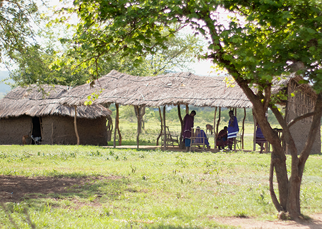 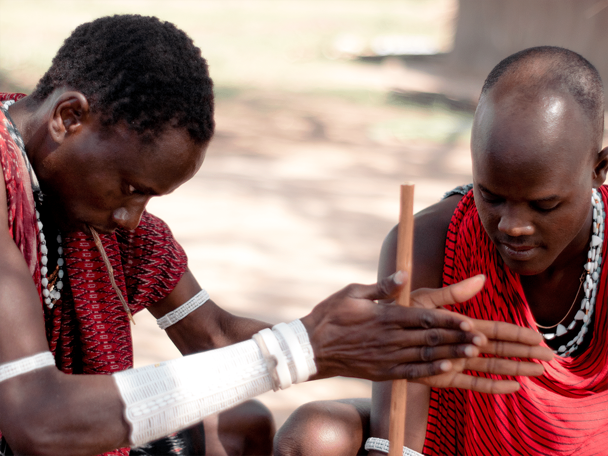 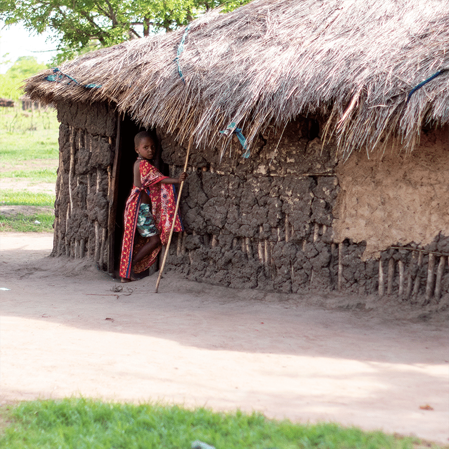 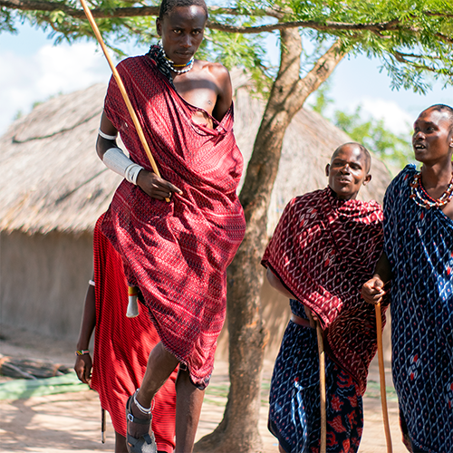 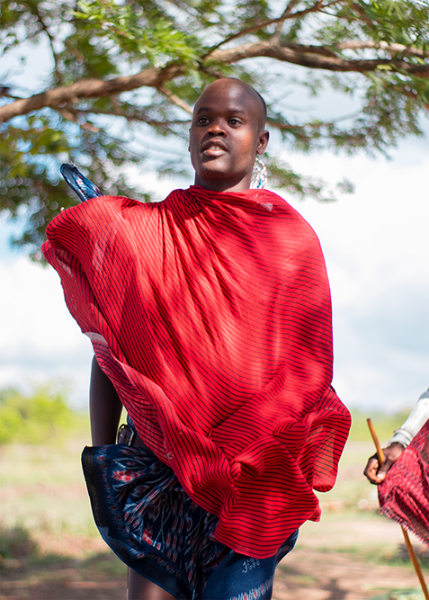 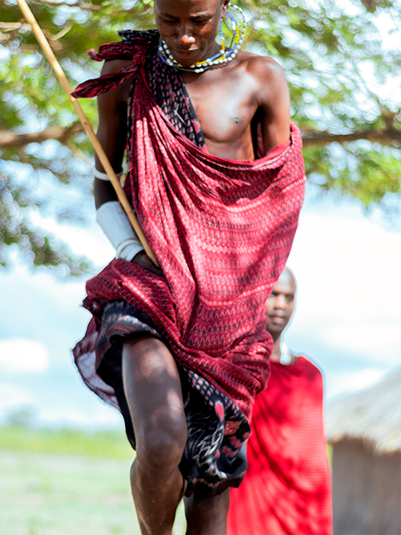Safari Photos
I visited two national parks in Morogoro, Tanzania: Mikumi and Selous Game reserve.
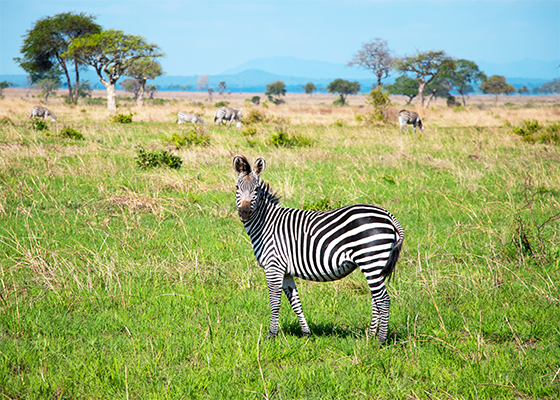 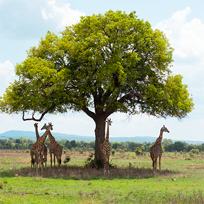 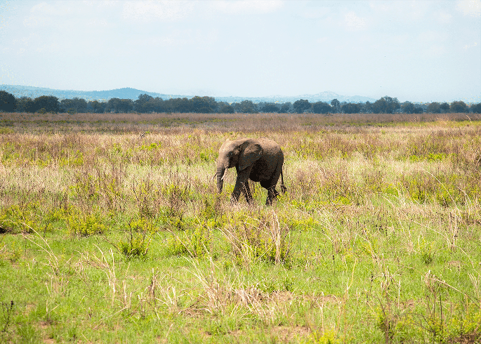 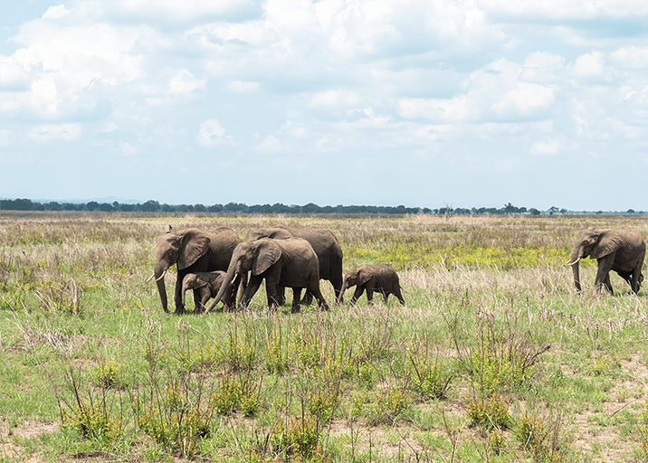 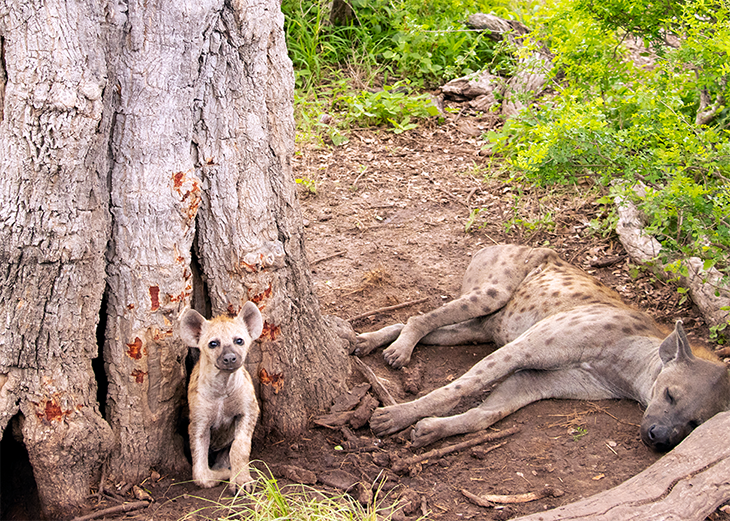 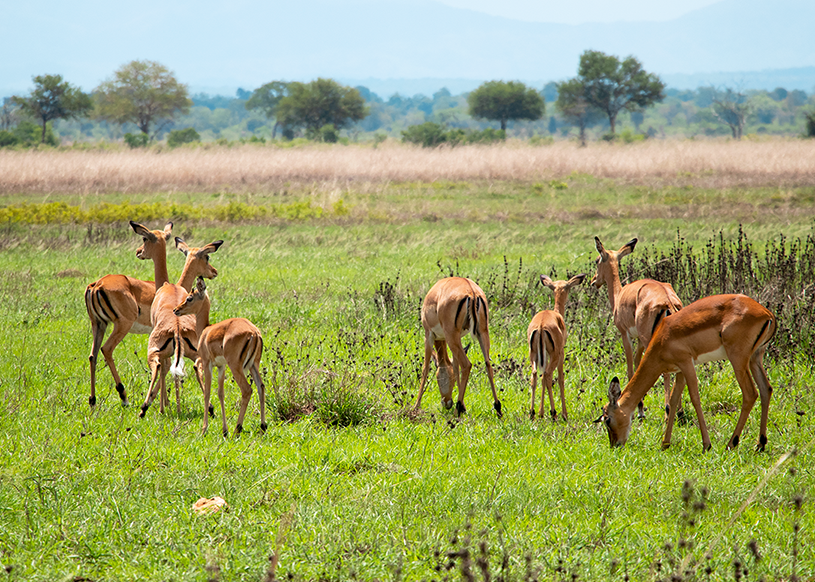